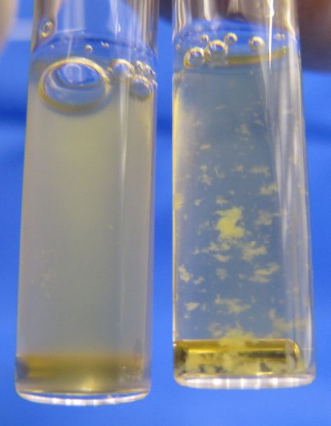
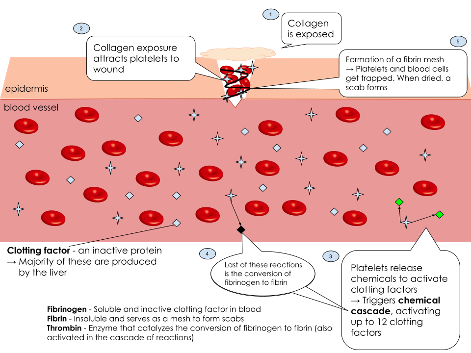

Гемостаз: тромбоциты, свёртывание и фибринолиз
Двойная задача системы: не терять кровь и не тромбировать сосуд
Система гемостаза решает две физиологические задачи: поддерживает жидкое состояние крови для перфузии тканей и мгновенно формирует механический барьер в месте повреждения сосуда для предотвращения кровопотери.[1, с. ?]
Это достигается равновесием прокоагулянтных и антикоагулянтных факторов при строгой пространственной локализации ответа исключительно в зоне травмы.
Гемостаз подразделяют на первичный (сосудисто-тромбоцитарный, образующий тромбоцитарную пробку за 1–3 мин в сосудах диаметром менее 100 мкм), вторичный (коагуляционный, укрепляющий агрегат сетями фибрина) и фибринолиз.
Сосудистая стенка и эндотелий как антитромботическая поверхность, что меняется при повреждении
Эндотелий — активный орган, изолирующий элементы крови от субэндотелиального коллагена и тканевого фактора.[2, с. ?]
Молекулярные механизмы антиагрегантной и антикоагулянтной активности эндотелия
Здоровый эндотелий секретирует ингибиторы агрегации:
- Простациклин (PGI2) — образуется с участием ЦОГ-1 и простациклинсинтазы, через IP-рецепторы активирует аденилатциклазу, повышает цАМФ и PKA, что выкачивает Ca2+ в плотную тубулярную систему и удерживает его на уровне менее 100 нмоль/л.
- Оксид азота (NO) — синтезируется eNOS из L-аргинина, через гуанилатциклазу и цГМФ активирует PKG, снижая уровень Ca2+ и блокируя фосфолипазу C.
- Экто-АДФаза (CD39) — фермент, расщепляющий внеклеточные АДФ и АТФ до АМФ, предотвращая спонтанную агрегацию.
Антикоагулянтные свойства обеспечивают гепарансульфат (активирует антитромбин III), тромбомодулин (связывает тромбин и активирует протеин C), TFPI и t-PA.
Сдвиг фенотипа эндотелия при повреждении
При повреждении выделение PGI2 и NO прекращается, обнажаются коллаген (типов I, III, IV), фибронектин и ламинин.
Эндотелиоциты секретируют из гранул Вейбеля — Паладе фактор Виллебранда (vWF) и P-селектин. Развивается вазоспазм, обусловленный рефлексами, эндотелином-1, серотонином и тромбоксаном A2 (TXA2).
Адгезия тромбоцитов, фактор Виллебранда, гликопротеин Ib, коллаген
Адгезия — прикрепление тромбоцитов к субэндотелию. При высокой скорости сдвига (>500–1000 с−1) прямое связывание с коллагеном невозможно без участия vWF.[3, с. ?]
Роль фактора Виллебранда (vWF) и гликопротеинового комплекса Ib-IX-V
Мультимерный vWF связывается A3-доменами с коллагеном и разворачивается под действием сдвиговых сил. Его A1-домены взаимодействуют с комплексом GPIb-IX-V (субъединицей GPIbα) тромбоцита, обеспечивая его «качение» (rolling).
Сверхкрупные мультимеры UL-vWF расщепляются металлопротеиназой ADAMTS13 в домене A2 до менее активных форм.
Прямая адгезия и активация через рецепторы коллагена
Замедление движения клетки позволяет включиться рецепторам прямого связывания:
- Гликопротеин VI (GPVI) — ассоциирован с FcRγ-цепью (содержит ITAM); связывание с коллагеном запускает фосфорилирование через Src/Syk-киназы и сигналинг PLCγ2.
- Интегрин α2β1 (GPIa/IIa) — под воздействием сигнала от GPVI (inside-out signaling) переходит в высокоаффинное состояние, иммобилизуя тромбоцит.
Активация тромбоцита, секреция гранул, тромбоксан A2, АДФ, изменение формы
Адгезия и сигнал от GPVI запускают активацию тромбоцита.[4, с. ?]
Сигнальный каскад и изменение формы клетки
Активация PLCγ2 или PLCβ приводит к расщеплению PIP2 до IP3 и DAG, что выбывает подъём [Ca2+]i со 100 нмоль/л до 1–5 мкмоль/л.

IP3 вызывает выход Ca2+ из плотной тубулярной системы. Ca2+ и DAG активируют PKC и MLCK, вызывая формирование псевдоподий и ламеллиподий с увеличением площади поверхности клетки более чем в 4 раза.
Синтез и секреция тромбоксана A2 (TXA2)
Под действием Ca2+ cPLA2 высвобождает арахидоновую кислоту, ЦОГ-1 превращает ее в PGH2, а тромбоксансинтаза — в TXA2.
TXA2 (t1/2 ~ 30 с) через TP-рецепторы (сопряженные с Gq и G12/13) аутокринно и паракринно усиливает активацию тромбоцитов и выбывает вазоспазм.
Секреция гранул: аутокринные и паракринные усилители
При активации происходить экзоцитоз гранул:
- Плотные гранулы (δ-гранулы) — содержат АДФ, АТФ, серотонин, Ca2+ и пирофосфат. Выделяющийся АДФ активирует пуриноцепторы P2Y1 (Gq, Ca2+, изменение формы) и P2Y12 (Gi, снижение цАМФ, стойкая агрегация). Серотонин действует через 5-HT2A-рецепторы.
- Альфа-гранулы (α-гранулы) — выделяют фибриноген, vWF, фибронектин, факторы V и XI, PF4, PDGF и TGF-β.
| Структура / Гранула | Лиганд / Содержимое | Внутриклеточный посредник / Механизм | Физиологическая функция | Врожденный дефект |
|---|---|---|---|---|
| Комплекс GPIb-IX-V | Фактор Виллебранда (vWF) | Связь с цитоскелетом (филамин A) | Первичная адгезия при высоких скоростях сдвига («качение») | Синдром Бернара — Сулье |
| Рецептор GPVI | Субэндотелиальный коллаген | FcRγ-цепь → Syk → PLCγ2 → IP3/DAG → Ca2+ | Первичная активация, запуск секреции и смены формы | Дефицит GPVI |
| Интегрин αIIbβ3 (GPIIb/IIIa) | Фибриноген, vWF | Inside-Out сигналинг (таллин, киндилин-3) | Межтромбоцитарное связывание (агрегация) | Тромбастения Гланцмана |
| Рецепторы P2Y1 и P2Y12 | Внеклеточный АДФ | P2Y1 (Gq → Ca2+); P2Y12 (Gi → ↓цАМФ) | Усиление агрегации, рекрутирование клеток | Дефекты рецепторов к АДФ |
| Плотные гранулы (δ) | АДФ, АТФ, серотонин, Ca2+ | Экзоцитоз при повышении [Ca2+]i | Рекрутирование тромбоцитов, вазоконстрикция | Синдром Хержманского — Пудлака |
| Альфа-гранулы (α) | Фибриноген, vWF, Фактор V, PF4, PDGF | Экзоцитоз с участием SNARE-белков | Обеспечение субстратами агрегации, заживление | Синдром серых тромбоцитов |
Агрегация, гликопротеин IIb/IIIa, белый тромб
Агрегация — процесс межклеточного сцепления активированных тромбоцитов.[5, с. ?]

Активация интегрина αIIbβ3 (GPIIb/IIIa)
На мембране тромбоцита содержится 50 000–80 000 копий интегрина αIIbβ3.
Сигналы от GPVI, TP и P2Y12 активируют белки таллин и кинделин-3, связывающиеся с β3-субъединицей (inside-out signaling). Это выпрямляет интегрин, обеспечивая связывание с фибриногеном и vWF.
Формирование белого тромба и прокоагулянтная трансформация
Молекула фибриногена связывает два интегрина αIIbβ3 на соседних тромбоцитах, формируя первичную пробирку — белый тромб.
При нарастании активации [Ca2+]i стимулирует скамблазу и угнетает флиппазу, перенося фосфатидилсерин на наружную мембрану (flip-flop). Это создает каталитическую площадку для сборки комплексов теназа и протромбиназа вторичного гемостаза.
Как выглядит в клинике дефект этого звена: петехии, кровоточивость слизистых
Нарушения первичного гемостаза возникают при тромбоцитопении (норма 150–400 × 109/л, риск кровотечений при <20–50 × 109/л), тромбоцитопатиях или болезни Виллебранда, проявляясь микроциркуляторным типом кровоточивости.[6, с. ?]
Основные клинические проявления
- Петехии — точечные (<2 мм) геморрагии, не бледнеющие при надавливании, вызваны выходом эритроцитов из капилляров при нарушении ангиотрофической функции тромбоцитов.
- Пурпура и экхимозы — поверхностные подкожные кровоизлияния.
- Кровоточивость слизистых оболочек — носовые кровотечения, кровоточивость десен, меноррагии, ЖКТ-кровотечения и гематурия.
- Кровотечения после порезов — возникают сразу после травмы и останавливаются прижатием.
1. Свёртывание крови: от классической каскадной схемы к современной клеточной модели
Классическая каскадная гипотеза (1964 г., Р. Дэйви, У. Ратнофф, Р. Макфарлейн) описывала свёртывание как последовательность реакций в плазме с разделением на внутренний и внешний пути, объединяющиеся при активации фактора X с образованием тромбина и фибрина.[7, с. ?]
Модель объясняла тесты in vitro (АЧТВ, ПВ), но не отвечала на клинические вопросы in vivo:
- Почему дефицит факторов контактной фазы (фактора XII, высокомолекулярного кининогена, прекалликреина) удлиняет свёртывание в пробирке до 100 мс и более, но не вызывает кровотечений?
- Почему при гемофилии А (дефицит фактора VIII) и B (дефицит фактора IX) возникают тяжелые кровотечения при интактном внешнем пути (тканевой фактор и фактор VIIa)?
В живом организме свёртывание локализовано на мембранах клеток. В начале 2000-х гг. создана клеточная модель гемостаза (М. Хоффман, Д. Монро). Процесс протекает на тканевофакторных клетках (субэндотелиальные фибробласты, перициты, моноциты) и активированных тромбоцитах и включает три фазы: инициацию, усиление (амплификацию) и распространение (пропагацию).
2. Фаза инициации: тканевой фактор и комплекс с фактором VIIa
Тканевой фактор (ТФ, фактор III, CD142) — трансмембранный гликопротеин субэндотелиальных клеток (фибробластов адвентиции, гладкомышечных клеток, перицитов), отделенный от крови эндотелием.[1, с. ?]
При повреждении сосуда циркулирующий FVIIa (около 1% от всего FVII) в присутствии Ca2+ связывается с ТФ, образуя комплекс внешней теназы [ТФ-FVIIa].
Комплекс внешней теназы гидролизует два профермента:
- Превращает фактор X в фактор Xa (FXa).
- Расщепляет фактор IX с образованием фактора IXa (FIXa).
FXa связывается с фактором Va (FVa), образуя на субэндотелиальной клетке протромбиназный комплекс [FXa-FVa-Ca2+], генерирующий следовые количества тромбина (1–2 нмоль/л).
Ингибитор TFPI связывает FXa, а комплекс [TFPI-FXa] обратно связывается с [ТФ-FVIIa], полностью блокируя его и завершая фазу инициации.
3. Фазы усиления и распространения: мембранные комплексы теназы и протромбиназы
Фаза усиления (amplification)
Тромбин диффундирует к тромбоцитам, активируя рецепторы PAR-1 и PAR-4.[2, с. ?] Это запускает два процесса:
1. Активация скрамблазы и угнетение флиппазы вызывают перемещение фосфатидилсерина на наружный слой мембраны тромбоцита.
2. Тромбин активирует кофакторы:
- Превращает фактор V в активный кофактор Va (FVa).
- Отщепляет фактор VIII от фактора Виллебранда, образуя кофактор VIIIa (FVIIIa).
- Активирует фактор XI в фактор XIa (FXIa) на тромбоците.
Фаза распространения (propagation)
Реакции переносятся на мембрану тромбоцита, где в присутствии Ca2+ собираются два комплекса:
Внутренняя теназа (Intrinsic Tenase): комплекс [FIXa-FVIIIa-Ca2+-мембрана] активирует фактор X с каталитической эффективностью в 50 000–100 000 раз выше свободного FIXa.
Протромбиназный комплекс (Prothrombinase): комплекс [FXa-FVa-Ca2+-мембрана] расщепляет протромбин (фактор II) по связям Arg271-Thr272 и Arg320-Ile321 с образованием тромбина (IIa), ускоряя процесс в 300 000 раз.
Это вызывает тромбиновую вспышку (thrombin burst) — рост концентрации тромбина до 100–500 нмоль/л и более.
4. Тромбин как центральный регулятор гемостаза и его положительные обратные связи
Тромбин (фактор IIa) — трипсин-подобная сериновая протеаза (34 кДа) с каталитической триадой (His-57, Asp-102, Ser-195), экзосайтом I (связывание фибриногена, PAR-1, тромбомодулина) и экзосайтом II (гепарин-связывающим).[3, с. ?]
Петли положительной обратной связи:
- Активация тромбоцитов: через рецепторы PAR-1 и PAR-4.
- Активация кофакторов V и VIII: превращает FV и FVIII в FVa и FVIIIa.
- Активация фактора XI: замыкает синтез FXIa на поверхности тромбоцитов.
- Активация фактора XIII: переводит FXIII в трансаминидазу (FXIIIa).
- Активация TAFI: активирует ингибитор фибринолиза (TAFI).
На здоровом эндотелии тромбин связывается с тромбомодулином, теряет способность расщеплять фибриноген и активирует протеин C, который в комплексе с протеином S разрушает FVa и FVIIIa.
5. Фибринообразование: от растворимого фибриногена к стабильному фибриновому сгустку и красному тромбу
Фибриноген (фактор I) — растворимый димерный гликопротеин плазмы (340 кДа, норма 2,0–4,0 г/л), состоящий из цепей Aα, Bβ, γ, образующих центральный домен E и два периферических домена D.[4, с. ?]

Превращение фибриногена в фибрин протекает в три этапа:
- Ферментативный этап: тромбин отщепляет от домена E фибринопептид А (16 аминокислот) и фибринопептид B (14 аминокислот), образуя фибрин-мономер.
- Самосборка (полимеризация): домены E связываются с D-доменами соседних мономеров, формируя протофибриллы и нековалентный фибрин-S.
- Стабилизация сгустка: фактор XIIIa (плазменная трансаминидаза) катализирует образование ковалентных изопептидных связей между лизином и глутамином (сначала γ-цепей с образованием D-димеров, затем α-цепей), превращая фибрин-S в нерастворимый фибрин-I.
В медленном кровотоке густая сеть фибрина-I захватывает эритроциты, формируя красный тромб.
При ретракции сгустка тромбоциты сокращают актин-миозиновый комплекс (тромбостенин) через рецепторы αIIbβ3, уплотняя сгусток до 10–20% от первоначального объема с выдавливанием сыворотки крови (не содержащей фибриногена и факторов II, V, VIII).
6. Витамин K-зависимое гамма-карбоксилирование и фармакологическая регуляция свёртывания
Синтез факторов II, VII, IX, X, протеина C и протеина S в гепатоцитах зависит от витамина K.[5, с. ?] В эндоплазматическом ретикулуме фермент γ-глутамилкарбоксилаза присоединяет группу -COOH к остаткам глутаминовой кислоты (Glu) в Gla-домене этих белков.
Механизм работы Gla-домена:
- Глутаминовая кислота превращается в γ-карбоксиглутаминовую кислоту (Gla) с двумя ионами -COO-.
- Gla-остатки связывают Ca2+.
- Ca2+ меняет конформацию Gla-домена, выворачивая наружу гидрофобные остатки (фенилаланин, лейцин).
- Гидрофобно-ионный комплекс связывается через Ca2+-мостики с фосфатидилсерином мембран тромбоцитов.
Без γ-карбоксилирования факторы не связывают Ca2+ и липиды, теряя способность формировать комплексы теназы и протромбиназы.
При реакции витамин K-гидрохинон окисляется в витамин K-2,3-эпоксид. Регенерирует его витамин K-эпоксидредуктаза (VKORC1).
- Непрямые антикоагулянты (антагонисты витамина K):
- Кумарины (варфарин, аценокумарол) ингибируют VKORC1, истощая гидрохинон. Печень выделяет дефектные факторы (PIVKA). Эффект развивается через 36–72 часа (период полувыведения FVII — 5–6 часов).
- Прямые пероральные антикоагулянты (ПОАК):
- Свободно и селективно блокируют факторы в крови: ривароксабан, апиксабан, эдоксабан — ингибиторы FXa; дабигатран этексилат — ингибитор тромбина (FIIa).
| Характеристика | Внешняя теназа | Внутренняя теназа | Протромбиназа |
|---|---|---|---|
| Фермент (сериновая протеаза) | Фактор VIIa (FVIIa) | Фактор IXa (FIXa) | Фактор Xa (FXa) |
| Белковый кофактор | Тканевой фактор (ТФ, FIII) | Фактор VIIIa (FVIIIa) | Фактор Va (FVa) |
| Клеточная поверхность | Фибробласт | Активированный тромбоцит | Активированный тромбоцит |
| Необходимость Ca2+ и фосфолипидов | Да (Ca2+) | Да (Ca2+ + фосфатидилсерин) | Да (Ca2+ + фосфатидилсерин) |
| Основной субстрат | Факторы X, IX | Фактор X | Протромбин (Фактор II) |
| Главный продукт реакции | Факторы Xa, IXa | Фактор Xa | Тромбин (Фактор IIa) |
| Зависимость от Витамина K | Да (FVIIa) | Да (FIXa) | Да (FXa и FII) |
Естественные антикоагулянты
Естественные антикоагулянты синтезируются гепатоцитами и эндотелиоцитами и классифицируются на три системы.[6, с. ?]
Антитромбин III
Антитромбин III (AT III) — серпин, обеспечивающий до 75% антикоагулянтной активности плазмы. Образует комплекс 1:1 с тромбином (IIa) и FXa (в меньшей степени IXa, XIa, XIIa). При связывании с гепарансульфатом эндотелия скорость инактивации IIa и FXa возрастает более чем в 1000 раз.
Система протеина C и протеина S
Протеин C — витамин K-зависимый зимоген.
Этапы активации:
- Избыток тромбина связывается с тромбомодулином эндотелия.
- Тромбин теряет способность расщеплять фибриноген и активировать тромбоциты, но приобретает способность активировать протеин C.
- Рецептор EPCR презентует протеин C комплексу тромбин-тромбомодулин.
- Тромбин отщепляет пептид, образуя активный протеин C (aPC).
Комплекс aPC с кофактором протеином S разрушает факторы Va и VIIIa, прекращая наработку тромбина.
Ингибитор пути тканевого фактора (TFPI)
TFPI содержащий три домена Кунитца, синтезируется эндотелием. Домен K2 связывает FXa, затем домен K1 связывает комплекс [TF-VIIa], образуя неактивный комплекс [TF-VIIa-Xa-TFPI] и выключая внешнюю фазу свертывания.
Фибринолитическая система
Фибринолиз — расщепление фибринового каркаса тромба плазмином для реканализации сосуда.[7, с. ?]
Плазминоген и его активаторы
Плазмин образуется из плазминогена печени, который связывается через «крингл-домены» с остатками лизина фибрина. Активаторы:
- Тканевой активатор (t-PA): секретируется эндотелием; на фибрине его активность по превращению плазминогена в плазмин возрастает более чем в 500 раз.
- Урокиназный активатор (u-PA): продуцируется почечным эпителием, моноцитами, эндотелием; функционирует во внесосудистом пространстве и моче.
Ингибиторы фибринолиза
- PAI-1: блокирует t-PA и u-PA в плазме.
- α2-антиплазмин: связывает свободный плазмин в плазме.
- TAFI: отщепляет C-концевые остатки лизина от фибрина, замедляя сборку фибринолитического комплекса.
Продукты деградации фибрина и D-димер
Плазмин расщепляет нестабилизированный фибрин на фрагменты X, Y, D и E. При разрушении фибрина, сшитого фактором XIIIa, образуются D-димеры — маркер одновременного тромбообразования и фибринолиза.
Лабораторная оценка системы гемостаза
Тесты проводят на бестромбоцитарной цитратной плазме добавлением активаторов и CaCl2.[1, с. ?]
Основные коагулологические тесты
АЧТВ: оценивает внутренний и общий пути (фосфолипиды + активатор контактной фазы + Ca2+). Норма: 25–35 с.
Протромбиновое время (ПВ) и МНО: оценивает внешний и общий пути (тканевой фактор + Ca2+). Норма ПВ: 11–15 с. МНО = (ПВ пациента / ПВ контроля)ISI (норма 0.9–1.1).
Тромбиновое время (ТВ): оценивает превращение фибриногена в фибрин (добавляется тромбин). Норма: 14–18 с.
| Показатель | Оцениваемый путь / этап | Факторы свертывания | Нормальные значения | Причины удлинения / повышения |
|---|---|---|---|---|
| АЧТВ | Внутренний и общий пути | XII, XI, IX, VIII, X, V, II, I | 25–35 с | Гемофилия A, B, C; гепаринотерапия; дефицит факторов контактной фазы; волчаночный антикоагулянт. |
| Протромбиновое время (ПВ) / МНО | Внешний и общий пути | VII, X, V, II, I | ПВ: 11–15 с; МНО: 0.9–1.1 |
Терапия варфарином; дефицит FVII; заболевания печени; дефицит витамина K; ДВС-синдром. |
| Тромбиновое время (ТВ) | Конечный этап (полимеризация фибрина) | I (Фибриноген) | 14–18 с | Гипо-/дисфибриногенемия; высокая концентрация ПДФ; гепарин, дабигатран. |
| Концентрация фибриногена (по Клауссу) | Субстрат для образования сгустка | I (Фибриноген) | 2.0–4.0 г/л | Повышение: воспаление, беременность. Снижение: ДВС-синдром, печеночная недостаточность. |
| D-димер | Интенсивность вторичного фибринолиза | Стабилизированный фибрин | Менее 0.5 мкг/мл (FEU) | Повышение: тромбоз глубоких вен, ТЭЛА, ДВС-синдром, травмы, беременность. |
Триада Вирхова, патофизиология тромбообразования и ДВС-синдром
В 1856 году Рудольф Вирхов сформулировал концепцию трех факторов внутрисосудистого тромбообразования.[2, с. ?]
Триада Вирхова
- Повреждение сосудистой стенки (эндотелия): мощный протромбогенный стимул. Оголение субэндотелиального коллагена и тканевого фактора, прекращение секреции PGI2, NO и тромбомодулина вызывают мгновенную адгезию тромбоцитов и запуск внешнего пути коагуляции.
- Замедление или нарушение характера тока крови (стаз или турбулентность): при стазе замедляется вымывание активированных факторов свертывания, снижается приток антикоагулянтов и возникает гипоксия эндотелия. Турбулентность вызывыет механическое повреждение эндотелия и локальный застой.
- Изменение состава и свойств крови (гиперкоагуляция): сдвиг баланса в сторону свертывания, обусловленный первичными генетическими дефектами (мутация фактора V Лейден, дефицит антитромбина III) или вторичными состояниями (обезвоживание, опухоли, системное воспаление).
Артериальные и венозные тромбозы
Артериальные тромбозы: возникают при высоком сдвиговом напряжении и быстром кровотоке вследствие повреждения эндотелия. Тромб («белый») состоит из агрегированных тромбоцитов и фибрина. Профилактика и лечение: антиагреганты.
Венозные тромбозы: развиваются при низком сдвиговом напряжении, стазе и гиперкоагуляции. Сгусток («красный») содержит фибриновую сеть и эритроциты. Профилактика и терапия: антикоагулянты.
Синдром диссеминированного внутрисосудистого свертывания (ДВС-синдром)
ДВС-синдром — тяжелый процесс с системной активацией коагуляции и образованием множественных микротромбов. Всегда вторичен (осложнение сепсиса, травм, ожогов, акушерских катастроф).
Патогенез протекает в две фазы:
- Гиперкоагуляционная фаза: массовое поступление тканевого фактора приводит к генерализованному образованию тромбина, микротромбозу капилляров и полиорганной недостаточности.
- Гипокоагуляционная фаза (коагулопатия потребления): истощение тромбоцитов, фибриногена, факторов V и VIII на фоне вторичного гиперактивированного фибринолиза и накопления продуктов деградации фибрина приводит к массивным кровотечениям.
Фармакологическая регуляция гемостаза
Включает применение антиагрегантов, антикоагулянтов и тромболитиков.[3, с. ?]
Антиагреганты
Ингибируют адгезию и агрегацию тромбоцитов:
- Ацетилсалициловая кислота (Аспирин): необратимо ацетилирует ЦОГ-1 (серин-529), блокируя синтез тромбоксана A2 (TxA2) на весь срок жизни тромбоцита (7–10 дней).
- Блокаторы P2Y12-рецепторов АДФ (Клопидогрел, Прасугрел, Тикагрелор): блокируют рецепторы P2Y12, предотвращая активацию Gi-белка, снижение цАМФ и изменение конформации интегрина αIIbβ3.
- Антагонисты рецепторов гликопротеина IIb/IIIa (Абциксимаб, Эптифибатид, Тирофибан): блокируют αIIbβ3-рецепторы, препятствуя связыванию фибриногена и агрегации.
Антикоагулянты
Угнетают биосинтез или активность плазменных факторов свертывания.
Гепарины:
- Нефракционированный гепарин (НФГ): связывается с антитромбином III, ускоряя инактивацию тромбина (IIa) и фактора Xa (требует цепь не менее 18 сахаридов).
- Низкомолекулярные гепарины (НМГ: Еноксапарин, Надропарин, Дальтепарин): селективно инактивируют фактор Xa (соотношение anti-Xa / anti-IIa от 2:1 до 4:1).
Антагонисты витамина K (Варфарин): ингибируют VKORC1 в печени, нарушая γ-карбоксилирование факторов II, VII, IX, X и протеинов C, S. «Акарбоксилированные» факторы теряют способность связывать Ca2+. Эффект развивается отсроченно (через 3–5 дней).
Прямые оральные антикоагулянты (ПОАК):
- Прямые ингибиторы фактора Xa (Ривароксабан, Апиксабан, Эдоксабан): селективно блокируют активный центр фактора Xa без участия антитромбина III.
- Прямые ингибиторы тромбина (Дабигатрана этексилат): блокируют активный центр тромбина (фактора IIa).
Тромболитики
Растворяют сформированные тромбы при окклюзиях (инфаркт миокарда, инсульт, ТЭЛА). Рекомбинантные ТАП (Алтеплаза, Тенектеплаза) имитируют эндогенный t-PA, катализируя локальное превращение плазминогена в плазмин на фибрине. Стрептокиназа образует комплекс с плазминогеном в плазме, вызывая системный фибринолиз.
Источники
- Гайтон А. К., Холл Дж. Э. Медицинская физиология. — М.: Логосфера, 2018. ↑ ↑ ↑
- Физиология человека / под ред. В. М. Покровского, Г. Ф. Коротько. — М.: Медицина, 2011. ↑ ↑ ↑
- Шмидт Р., Тевс Г. Физиология человека: в 3 т. — М.: Мир, 2005. ↑ ↑ ↑
- Barrett K. E., Barman S. M., Brooks H. L., Yuan J. X.-J. Ganong’s Review of Medical Physiology. 26th ed. — McGraw Hill, 2019. ↑ ↑
- Boron W. F., Boulpaep E. L. Medical Physiology. 3rd ed. — Elsevier, 2017. ↑ ↑
- Hoffbrand A. V., Moss P. A. H. Hoffbrand’s Essential Haematology. 8th ed. — Wiley-Blackwell, 2019. ↑ ↑
- Hoffman M., Monroe D. M. A cell-based model of hemostasis // Thrombosis and Haemostasis. — 2001. ↑ ↑